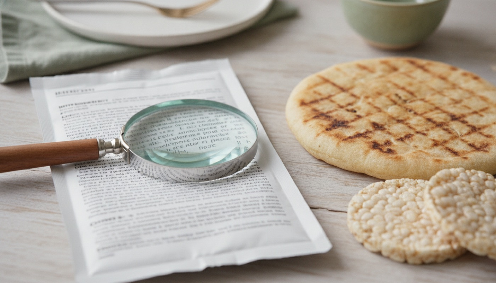

Könnyű Konyha
Könnyű KonyhaKét kikötés van, és azokban nincs kivétel.
Élesztő és tejfehérje nélkül. Nem „keveset”, nem „néha”: ez a két tétel kimarad. Minden más, a hús, a hal, a tojás, a hüvelyes, a gabona, a zöldség, a gyümölcs, az olaj, az olajos mag, ugyanúgy használható, mint bárhol máshol. A gomba szintén kimarad ebből a konyhából, és erre a receptek is figyelnek.
A kenyér helyére nem semmi jön.
Élesztő nélkül is van, amit megkenj. Sütőporral vagy szódabikarbónával kelesztett lepény (a lenti alaprecept, 10 perc), natúr puffasztott rizs- és kukoricalap, főtt rizs, köles, hajdina, polenta, burgonya, zabpehely. A tészta és a bulgur szintén élesztő nélkül készül. Amit a kenyér adott, azt itt a lepény és a puffasztott lap adja: valami, ami alátart.
Az élesztő nem csak a pékárunál van.
A második leggyakoribb hely nem is élesztő, hanem élesztőkivonat: ez adja a sós, „húsos” ízt a leveskockában, az ételízesítőben, a kész szószokban, a chipsek és a sós nassok fűszerezésében, sok instant levesben és néhány pástétomban. A címkén így szerepel: élesztő, élesztőkivonat, sörélesztő, yeast, yeast extract. Ezek helyére házi alaplé, friss fűszer, só, bors, paprika, citrom és paradicsom kerül, a lenti második alaprecept pont erről szól. (Hol fordul elő: konyhai tapasztalat, becslés, a konkrét termék összetevő-listája dönt.)
A címke dönt, nem az előlap, és a kettőt nem egyformán kell olvasni.
Ez a legfontosabb gyakorlati tudás, mert a két kikötés nem egyenrangú a jelölésben. A tej az Európai Unióban kötelezően kiemelt allergén: a rendelet szerint az allergén „nevét olyan szedéssel, például betűtípussal, stílussal vagy háttérszínnel, kell kiemelni, amely azt egyértelműen elkülöníti a többi összetevőtől”, és a tej a lista 7. pontja: „Tej és az abból készült termékek (beleértve a laktózt)”. Vagyis a tej tipográfiailag kiugrik az összetevők közül. Az élesztő viszont nincs a kötelezően kiemelt tételek között, a lista 14 pontos, és az élesztő nem szerepel rajta. Ezért:
- a tejet elég „megkeresni a kiemelt szavak között”,
- az élesztőt végig kell olvasni, az összetevők teljes felsorolásában, a sor végéig.
(Forrás: 1169/2011/EU rendelet, 21. cikk (1) b) pont és II. melléklet, EUR-Lex magyar szöveg, 2026-10-26-án megnyitva. A II. melléklet 14 pontból áll, a tej a 7.; az élesztő nincs a listán.)

Tej helyett: natúr, cukrozatlan, dúsított.
A növényi italok és joghurtok közül a natúr, cukrozatlan, kalciummal dúsított változat a jó választás. Egy fenntartást viszont érdemes tudni: a hazai dietetikusi ajánlás szerint a növényi italokra folyadékalternatívaként kell gondolni, tápanyagtartalomban jelentősen eltérnek a tejtől, ezért a tej helyettesítésére nem alkalmasak. Hogy emiatt kell-e bármit pótolni, az nem egy weboldalon dől el, a kérdéssor lent, az elvek alatti dobozban van.
(Forrás: OKOSTÁNYÉR®, MDOSZ, 2023-09-18 „a növényi italokra folyadékalternatívaként kell gondolni, tápanyagtartalomban jelentősen eltérnek a tejtől, ezért helyettesítésére nem alkalmasak”.)
Fehérje és kalcium: innen jön, tej nélkül.
Nem mindegy, melyik növényi alternatívát veszed, és ez mérhető. Száz grammra: a natúr szójaital 3,55 g fehérjét és 101 mg kalciumot ad, a zabital 0,8 g fehérjét és 148 mg kalciumot; a kalcium-szulfáttal készült tömör tofu 17,3 g fehérjét és 683 mg kalciumot, ugyanakkor a nigarival készült selyemtofu csak 6,9 g fehérjét és 32 mg kalciumot. Vagyis a tofunál az összetevő-listán szereplő savó-, illetve derítőanyag dönt: ha kalcium-szulfát (E516) van benne, az jelentős kalciumforrás, ha nem, akkor nem az. Emellett a hazai ajánlás a hüvelyeseket és az olajos magvakat is a javasolt fehérjeforrások közé emeli, a tojást pedig teljes értékű fehérjeforrásként nevezi meg.
(Fehérje- és kalciumértékek: USDA FoodData Central, 2026-10-26-án megnyitva, szójaital FDC 1999630, zabital FDC 2257046, tömör tofu FDC 172475, selyemtofu FDC 172461. Forrás a fehérjeforrásokra: OKOSTÁNYÉR®, MDOSZ, 2023-09-18 „a javasolt fehérjeforrások között az állati eredetű termékek mellett a hüvelyesek és olajos magvak is megjelennek”; „a tojás teljes értékű fehérjeforrás”.)
Napi 500 g zöldség és gyümölcs.
A magyar ajánlás 2023-ban ide emelte a napi mennyiséget, és a gyakorlati tipp is onnan van: ha minden étkezésbe kerül zöldség vagy gyümölcs, ez magától összeáll. Élesztő és tej nélkül ez a rész amúgy is felértékelődik: a tányér nagyobb felét a zöldség adja.
(Forrás: OKOSTÁNYÉR®, MDOSZ, 2023-09-18 „a zöldség-gyümölcs ajánlott mennyisége napi 500 grammra emelkedett”; „Ha minden étkezésünk tartalmaz zöldséget és/vagy gyümölcsöt, nem lesz nehéz elfogyasztani napi 500 grammot belőlük”.)
Hús ésszerűen, és hetente egy húsmentes nap.
A vörös húsok és a feldolgozott húsipari termékek mennyiségi korlátozása a hazai ajánlásban is megjelent, mellette a heti rendszerességű húsmentes nap javaslata. A feldolgozott húsnak itt egy második oka is van: a felvágott, a virsli és a pástétom az a termékkör, ahol a tejfehérje és az élesztőkivonat is gyakran megtalálható. Hús helyett hüvelyes: lencse- vagy csicseriborsó-ragu körettel, vagy tojás a fogás közepére.
(Forrás: OKOSTÁNYÉR®, MDOSZ, 2023-09-18 „A vörös húsok és a feldolgozott húsipari termékek mennyiségi korlátozása is megjelent, valamint javaslatként a heti rendszerességű húsmentes nap ajánlása is szerepel”; „Hüvelyeseket használhatunk hús helyett, például lencse- vagy csicseriborsó-ragut készíthetünk”.)
Olajos hal és tojássárgája: rendszeres szereplők.
A D-vitamin fő táplálkozási forrásai közé tartoznak a zsíros halak, a halmáj, a halmájolaj, a tojássárgája és a dúsított élelmiszerek, a felsorolásban a joghurtok és a tejkészítmények is ott vannak, és pont ezek maradnak ki ebből a konyhából. Ezért a lazac, a makréla és a tojássárgája itt rendszeres szereplő.
(Forrás: OKOSTÁNYÉR®, MDOSZ, okostanyer.hu D-vitamin összefoglaló, 2026-10-26-án megnyitva „A D-vitamin fő táplálkozási forrásai közé tartoznak a zsíros halak, a halak mája, a halmáj olaj, a tojássárgája, valamint a D-vitaminnal dúsított élelmiszerek, például a joghurtok, tejkészítmények, gabonakészítmények, margarinok”.)
A konyhatechnika a legnagyobb svájcibicska.
Főzés, párolás, sütőben sütés, grillserpenyő, fóliában sütés, serpenyőben pirítás olajon, lassú párolás saját levében. Mindegyik szabad. Egyetlen technika az, ami rendszeresen elbukik: a bundázás és a panírozás, mert a zsemlemorzsa kenyérből készül. Ha panírra vágysz: darált olajos mag, kukoricadara vagy polenta a liszt után, ez sütőben szép kérget ad.
Egyéni tűrés: a te listád nem a szomszéd listája.
A két kikötésen túl mindenkinek más esik jól. A módszer egyszerű: egy hét ételnapló, és utána látszik, mi az, ami rendszeresen visszajön. Ez nem diagnózis és nem terápia, hanem jegyzet, amivel van miről beszélni a szakemberrel. A sablon lent.
Hol bújik meg az élesztő és a tejfehérje
Hol bújik meg az élesztő
Amit keresni kell az összetevők között: élesztő, élesztőkivonat, sörélesztő, szárított élesztő, kovász, kovászkultúra, „yeast”, „yeast extract”, „autolyzed yeast”.
Hol szokott lenni:
- Pékáru és minden kelesztett tészta: kenyér, zsemle, kifli, bagett, toast, pita, naan, pizzatészta, kalács, fánk, briós, hamburgerzsemle. A kovászos kenyér is ide tartozik, mert a kovász élesztőt tartalmaz.
- Kenyérből készült tételek: zsemlemorzsa, panír, zsemlekocka a levesben, bundázott félkész termékek, pirítóskenyér-chips.
- Sós ízfokozó szerepben, élesztőkivonatként: leveskocka, húsleveskocka, ételízesítő, kész alaplé, kész szószok és öntetek, instant levesek és krémleves-alapok, chips és sós nassok fűszerezése, néhány pástétom és májkrém, kész ragu- és bolognai-alapok.
- Italban: a sör élesztővel készül. A bor, a pezsgő és az erjesztett termékek (ecet, szójaszósz, miszó) kérdése nem egyértelmű, ezt nem egy weboldal dönti el, benne van a lenti kérdéssorban.
- Néhány táplálékkiegészítőben: a B-vitamin-készítmények egy része élesztő-alapú. Ha szedsz ilyet, érdemes a szakemberrel átnézni.
(A felsorolás konyhai és címke-olvasási tapasztalat, becslés: nem terméklista. Mindig a konkrét csomagolás összetevő-listája dönt.)
A buktató
az élesztő nem kötelezően kiemelt allergén, ezért nincs félkövérrel szedve a címkén. Végig kell olvasni az összetevők felsorolását. Lásd a 4. elvet.
Hol bújik meg a tejfehérje
Amit keresni kell: tej, tejpor, tejsavó, savópor, savófehérje, kazein, kazeinát, laktóz, vaj, sajt, tejszín, joghurt, tejcsokoládé, tejfehérje, „whey”, „milk”.
Hol szokott lenni: pékáru (tejpor, savópor, de az itt amúgy is kimarad), felvágott, virsli, pástétom (tejfehérje, kazeinát), kész szószok és salátaöntetek, instant levesek és krémleves-alapok, chips és sós nassok (sajtaroma), müzliszelet, csokoládé és édesség, panírozott félkész termékek, margarin, és néhány „növényi” desszert, amiben mégis savó van.
A két leggyakoribb félreértés:
- A „laktózmentes” nem tejfehérje-mentes. A laktóz cukor, a kazein és a savófehérje pedig fehérje: a laktózmentes tejben, túróban, sajtban a tejfehérje ugyanúgy benne van.
- A „növényi alapú” felirat sem garancia. Előfordul, hogy a termék növényi alapú, de savót vagy kazeinátot is tartalmaz. Az összetevők listája dönt, nem az előlap.
„Nyomokban tejet tartalmazhat”: ez gyártási kereszt-szennyezésre utal, nem összetevőre. Hogy ez mennyire számít, szakemberrel eldöntendő kérdés, a lenti kérdéssorban ott van.
A két kikötés egy mondatban, vásárlás közben
Van a listán élesztő, élesztőkivonat vagy kovász? Van kiemelve a tej? Ha bármelyikre igen: visszateszem.
Kérdések, amiket érdemes feltenni a szakembernek
Ez a lista nem diagnózis és nem terápia, hanem kérdéssor, amivel érdemes bemenni.
- Az élesztőmentesség nálam hol húzódik: az ecet, a szójaszósz, a bor és a többi erjesztett termék beleférnek-e, vagy azok is kimaradnak?
- Az élesztőkivonatot tartalmazó termékek (leveskocka, ételízesítő, chips) teljesen kimaradnak, vagy csak a mennyiség a kérdés?
- A szedett vitamin- és táplálékkiegészítő készítmények közül bármelyik élesztő-alapú?
- A tejtermékek teljes elhagyása mellett kell-e pótolni kalciumot, B12-t vagy D-vitamint, és miből?
- A növényi alternatívák közül nálam melyik a megfelelő, és mennyi fehérjére van szükségem naponta?
- A „nyomokban tejet tartalmazhat” jelölésű termékek nálam beleférnek-e?
- Élesztő nélkül a legtöbb bolti pékáru kimarad: hogyan érdemes a rostbevitelt tartani?
- Van olyan vizsgálati érték, amit emiatt érdemes rendszeresen követni, és milyen gyakran?
- Kell-e dietetikusi konzultáció, és kérhető-e rá beutaló?
Ételnapló-sablon
Egy hét, egy A5 lap, négy oszlop. Ennyi elég ahhoz, hogy legyen miről beszélni a következő szakemberi találkozón.
| Dátum, idő | Mit ettem (kb. mennyit) | Hogy esett 0-3 | Megjegyzés |
|---|---|---|---|
| 10-27, 7:30 | zabkása 40 g pehely + 2 dl szójaital + alma + 15 g mandula | 0 | |
| 10-27, 12:30 | csirkeragu rizzsel | 1 | nagyobb adag volt |